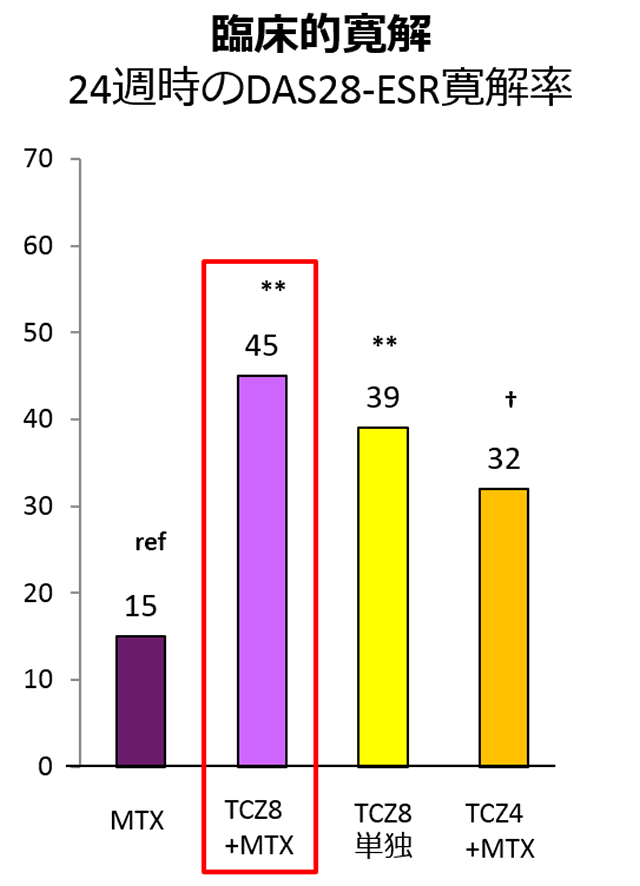
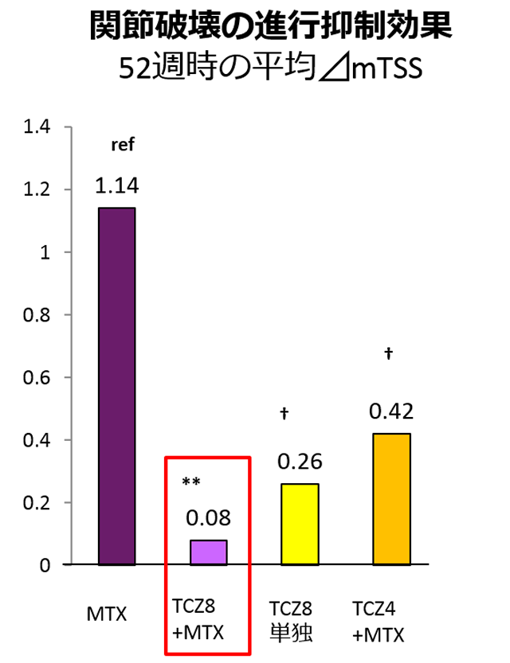
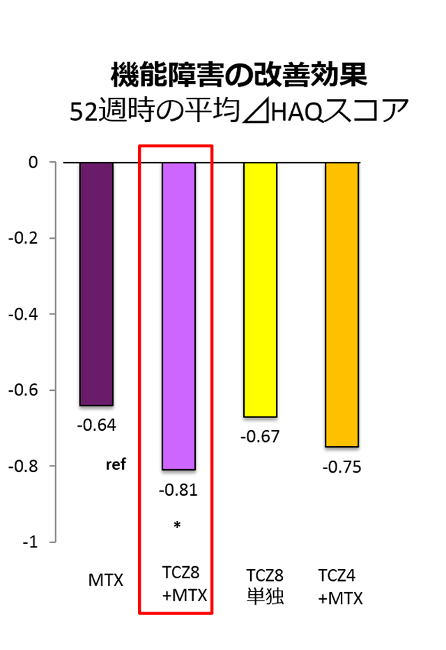

MTX使用歴のない早期RAに対し、MTX併用にて高い有効性を示した（FUNCTION Study）
【目的】 MTX使用歴のない早期RAに対するTCZ（±MTX）の有効性・安全性の検討
【対象患者】 罹病期間2年以内、DAS28-ESR＞3.2、MTX未使用、ESRまたはCRP異常値、RF/ACPA陽性または骨びらんのある患者
【主要評価項目】24週時のDAS28-ESR寛解率【副次評価項目】52週時の⊿mTSS、HAQ-DIの改善度



**= p<0.001; *= p<0.05
†= p≤0.05 after break in hierarchical testing
ref = reference category for statistical tests
ACT+MTX併用投与は、高い寛解率・関節破壊抑制効果・機能障害改善効果を示した